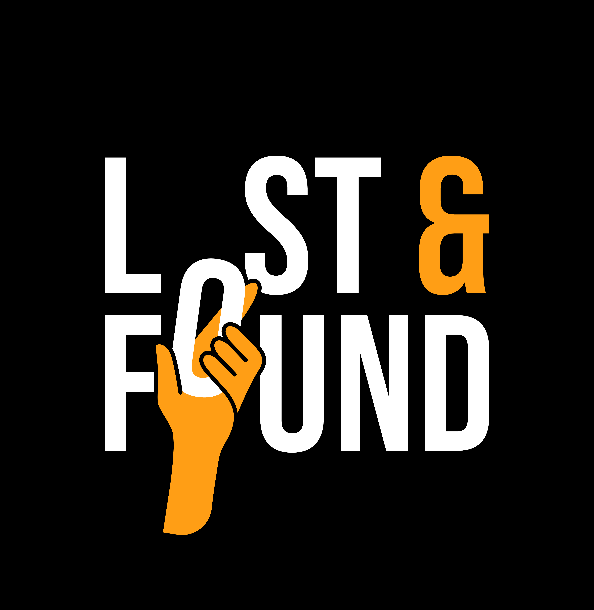

A centralized platform to report, track, and recover lost items within your community. Connect with people who found your belongings — quickly and effortlessly.
Three simple steps to recover your lost items
Lost something? Post details including title, description, location, date, and a photo. Your listing goes live instantly.
Explore all lost and found listings. Filter by category, search by keywords, and find what you're looking for.
Found someone's item? Click "I Found This" to notify the owner instantly via email with your contact details.
When someone finds your item, you'll receive an email notification with the finder's contact details automatically.
Your account is protected with secure authentication. Only share contact details when you choose to.
Fully responsive design that works perfectly on desktops, tablets, and mobile devices.
Join the community and help recover lost items today.